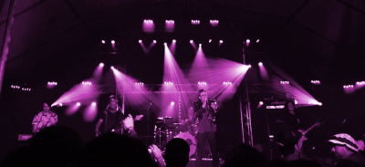

Generations Of Rock Society

Drie generaties Flakkeese muzikanten die vijf decennia rockhits spelen, bijeengebracht door de 17-jarige guitarhero Bas Broeders. Samen met zangeres Jannet Doorn (Liars Dance, Buckle Up, Sir Olivers Band), bassist en zanger Freek Ramorré (35 jaar
in talloze punk- en metalbandjes), drummer Seb Rommens (JIC, Misst, Bizzar) en de eveneens 17-jarige toetsenist Daniël Wendt (Goldfish) wordt er sinds oktober vorig jaar keihard gewerkt aan een set die Flakkee zal doen overkoken. Van Rainbow
tot Europe en van Queen tot Van Halen, maar ook klassiekers van eigen bodem en eigen werk zullen een onvergetelijke avond gevuld met muziek vormen. Dat is Generations Of Rock Society, oftewel GORS. Long Live Rock & Roll!